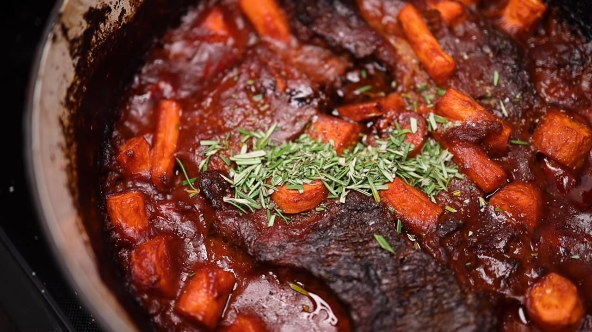

Pot Roast with Baked Mashed Potatoes

A deliciously scrumptious and savory recipe for Pot Roast, only one-upped
by the rich and garlicky flavor of the mashed potatoes, which are baked to
enrich the flavor even further. Although this is the long way of doing it,
the end product is absolutely worth the effort.
INGREDIENTS
For the Pot Roast
- 2.5-3lb beef chuck roast
- 1 large onion
- 1-2 stalks celery
- 1 lb large carrots
- 1-2 cups red wine (about half a botle)
- 28 oz can crushed tomatoes
- 2-3 tbsp tomato paste
- 1/4 cup flour
- 2-3 tbsp worcestershire sauce
- 1-2 tbsp baslamic vinegar
- oil
- salt
- pepper
- garlic powder
- fresh rosemary
For the Potatoes
- 2lbs baking potatoes (russets work great)
- 1-2 sticks butter, ideally cultured
- full head of garlic (none of that half nonesense)
- 1/2-1 cup of milk
- salt
- pepper
INSTRUCTIONS
-
If you want to limit the amount of fat in the final dish, trim any large
globs of fat out of the inside of the meat — don't worry about mangling
it. Put a thin film of oil into a large Dutch oven on medium heat, then
slowly brown the meat, taking care to not let anything burn on the
bottom of the pan. Start the oven pre-heating to 350 F.
-
While the meat is browning, peel and cut the onion into thin
quarter-circles and chop the celery into small pieces. When the meat is
brown, remove it to a plate and put in the vegetables. Keep the
vegetables moving and cook them until you're worried the fond on the pan
is going to burn, then put in the tomato paste and the flour and stir
aggressively to disperse the flour through the fat in the pan.
-
When you're REALLY worried stuff is gonna burn, pour in the wine and
start scraping the bottom with a wooden spoon. Pour in the tomatoes
and the Worcestershire sauce, and sprinkle on a couple teaspoons of
garlic powder. Stir to incorporate, then return the meat and any
juices that collected in the plate. Toss the meat in the sauce, put
the lid on the pot, and put the pot in the oven.
-
Put the potatoes in the oven too, right on the rack, and cook until
easily pierced with a fork, 1-1.5 hours. Remove the potatoes and let
them cool for a moment. Put a large pan on medium heat and put in the
butter to slowly melt. Meanwhile, peel and chop the garlic. Put the
garlic into the hot butter then immediately turn the heat off. If
anything looks or smells like it's going to burn, move the pan to a
cooler surface. Cut the potatoes in half, scoop out the flesh and pass
it through a ricer into the pan. Mix with enough milk to give you the
texture you want, and season with salt and pepper to taste. Cover and
keep warm until dinner.
-
Peel the carrots and cut them into large chunks of roughly equal mass.
-
After 2-3 hours total in the oven, the meat should be soft enough that
you could pull it apart with forks (but don't actually do that yet). Put
the carrots into the pot, get them coated in the sauce but not
submerged, and return the pot to the oven WITHOUT THE LID. Let cook
until the carrots are just tender enough to be pierced with a fork,
about an hour.
-
Remove the pot from the oven. Chop up a few stems of fresh rosemary and
put that in, along with some salt, pepper and the vinegar. Stir to
incorporate. The meat will start breaking up when you stir, which is a
good thing. Taste the sauce and add any additional seasoning or vinegar,
then stir one last time. If any of the meat has not yet broken apart
into manageable chunks, pull it apart with forks.
Go back for more recipes